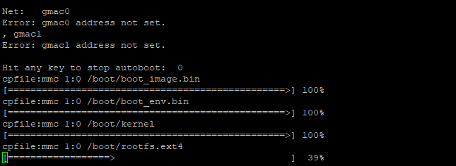
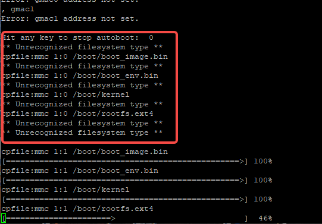
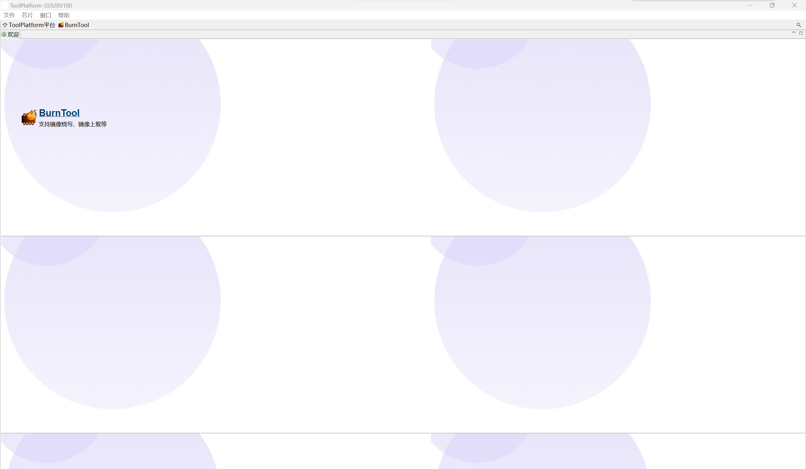
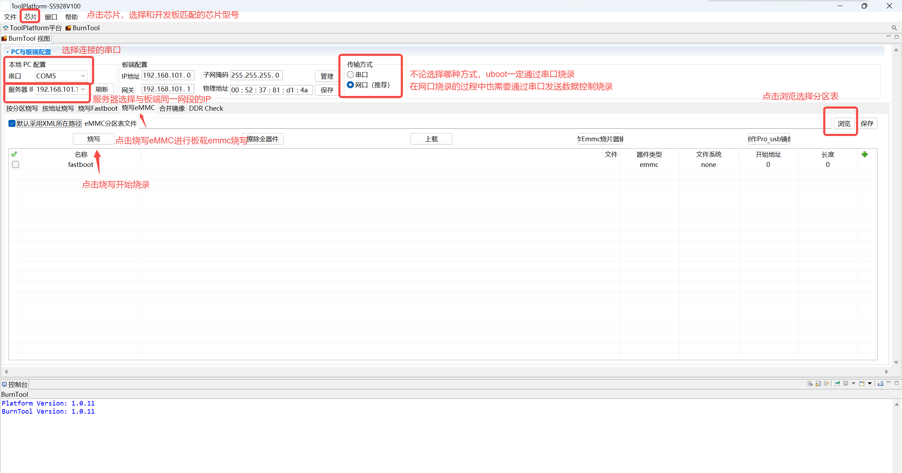
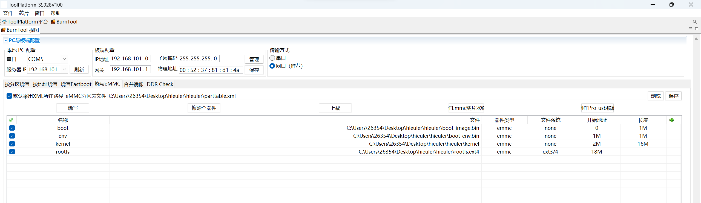
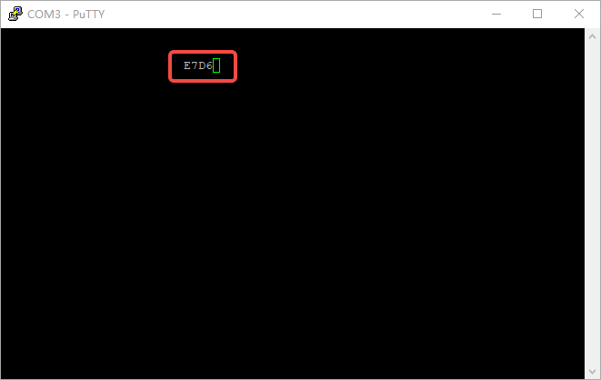

海鸥派镜像升级与启动¶
一、简介¶
欧拉派-海鸥 系列为用户提供以下两种升级方式：
ToolPlatform工具网络升级
SD卡升级
这两种升级方式都是将文件写入到板载的EMMC存储中，系统默认也从此处启动。除此之外还支持SD卡启动，需要额外配置启动参数，具体操作参考 四、SD卡启动 的部分。
二、SD卡升级¶
若不清楚这文件系统和系统分区可以忽略下面一小段备注，继续后面的操作。
【备注】 ：SD卡升级功能支持fat32格式和ext4格式的文件系统，在升级时会逐个扫描SD卡的每个分区，直到找到升级文件。
1) 检查文件系统格式¶
在windows中插入SD卡，查看SD卡的文件系统格式，若为FAT32则无需操作，若不是则需要格式化。

2) 拷贝固件¶
若要进行SD卡升级，需要将Boot Loader、kernel和文件系统拷贝到SD卡中，并按以下文件名命名， 放在SD卡根目录的boot目录下。
.
└── boot
├── boot_env.bin # uboot
├── boot_image.bin # uboot环境变量
├── kernel # linux内核
├── rootfs.ext4 # 根文件系统
└── env_append.txt # 烧录固件辅助文件
由于FAT32文件系统单文件最大仅支持4G的大小，在升级时除正常的单文件升级外还支持分块文件的升级。分块名为原始文件后追加分区编号，编号从0开始，编号不允许带无意义的0，例如rootfs.ext401.
.
└── boot
├── boot_env.bin # uboot
├── boot_image.bin # uboot环境变量
├── kernel # linux内核
├── rootfs.ext40 # 根文件系统
├── rootfs.ext41
├── rootfs.ext42
├── rootfs.ext43
├── rootfs.ext44
├── rootfs.ext45
└── env_append.txt # 烧录固件辅助文件
3) 升级固件¶
按住update按键，点按reset按键，在reset按键松开之后1~2s即可松开update按键。如果能连接串口可以看到以下输出则表示正在升级。
出现以下问题属于正常现象，在分区中未找到升级固件，只要最终出现升级进度条即可。
Note
使用SD卡更新固件时，可以不需要将所有二进制文件放在SD卡中，只需放入需要更新的二进制即可。 但是，不论更新任何二进制，都需要将env_append.txt文件放入SD卡中，否则无法更新。 比如，我只希望更新内核，那么只需要将kernel文件放入SD卡中， 同时将env_append.txt文件放入SD卡中。之后更新的步骤同上， 但是更新的进度条只会显示内核的更新进度。
三、ToolPlatform工具¶
ToolPlatform工具是烧录芯片镜像的最基本工具，未烧录任何芯片的裸板，或者uboot启动损坏都可以使用该工具重新烧录镜像。若正常使用SD卡升级则无需进行本章的操作。
使用ToolPlatform工具烧录时除了四个固件文件，还需要一个分区表，分区表描述了烧录文件的位置，烧录分区的大小等信息。

初次打开软件可能进入以下页面。
点击图中最醒目的BurnTool即可进入正常烧录的界面。
选择分区表后显示以下界面，点击烧写按键开始烧写，烧写开始时须复位开发板。
下方的控制台在烧录过程中会打印大量日志，在烧录过程中若出现错误可提供更多的错误信息以检查问题。

四、SD卡启动¶
1) 创建启动SD卡¶
从SD卡启动需在SD卡中创建对应boot文件分区表及rootfs系统分区表，可以通过修改sd_rootfs_num环境变量指定正确的分区。
【注】：
若正常进行分区sd卡的第一分区，分区号为1，后续分区以此类推。
默认从2号分区启动。
# 使用 fdisk 创建两个分区表，具体设备节点根据实际情况修改，此处需创建好对应1和2分区
sudo fdisk /dev/sdb
# 将分区号为1的分区格式化为 FAT32 格式，用于存储boot相关文件
sudo mkfs.vfat -F 32 /dev/sdb1
# 将该FAT32分区表挂载
sudo mount /dev/sdb1 /mnt/xxx
# 并在挂载后的路径内创建boot文件夹后拷入boot/kernel/rootfs等文件
# 注意此处boot文件夹内不要放入env_append.txt文件
.
└── boot
├── boot_env.bin # uboot
├── boot_image.bin # uboot环境变量
├── kernel # linux内核
└── rootfs.ext4 # 根文件系统
# 将分区号为2的分区格式化为 ext4，用于写入rootfs
sudo mkfs.ext4 /dev/sdb2
# 将rootfs镜像写入2号分区
sudo dd if=rootfs.ext4 of=/dev/sdb2
2) 从SD卡启动¶
若要从SD卡启动则需要在uboot内修改启动参数boot_media，在uboot的串口终端中输入print boot_media命令可查看当前的启动方式，boot_media为emmc时从板载的emmc启动，boot_media为sd时从SD卡启动。
# print boot_media
boot_media=emmc
设置从SD卡启动
# 设置从SD卡启动
setenv boot_media sd
# 设置从EMMC启动
setenv boot_media emmc
【注】：
SD卡启动必须为ext4格式的文件系统
默认从SD卡的第二分区启动，若要修改启动分区可修改环境变量
sd_rootfs_num完成对应操作后需要使用
saveenv保存环境变量
五、常见问题¶
系统无法启动
验证环境变量和分区规划是否匹配
指定的分区位置根文件系统是否损坏
系统无法升级
验证升级分区是否正常
升级文件的路径是否正确
文件系统格式是否正确
【注】：可直接执行
run updatecmd尝试升级查看报错无法看到系统打印信息，过一段时间会弹出一段编码
这种情况可能是uboot损坏导致的无法启动，参考 三、ToolPlatform工具 重新烧录uboot和env
